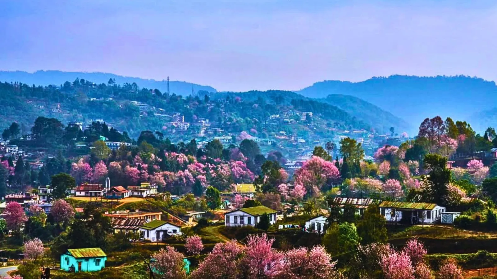
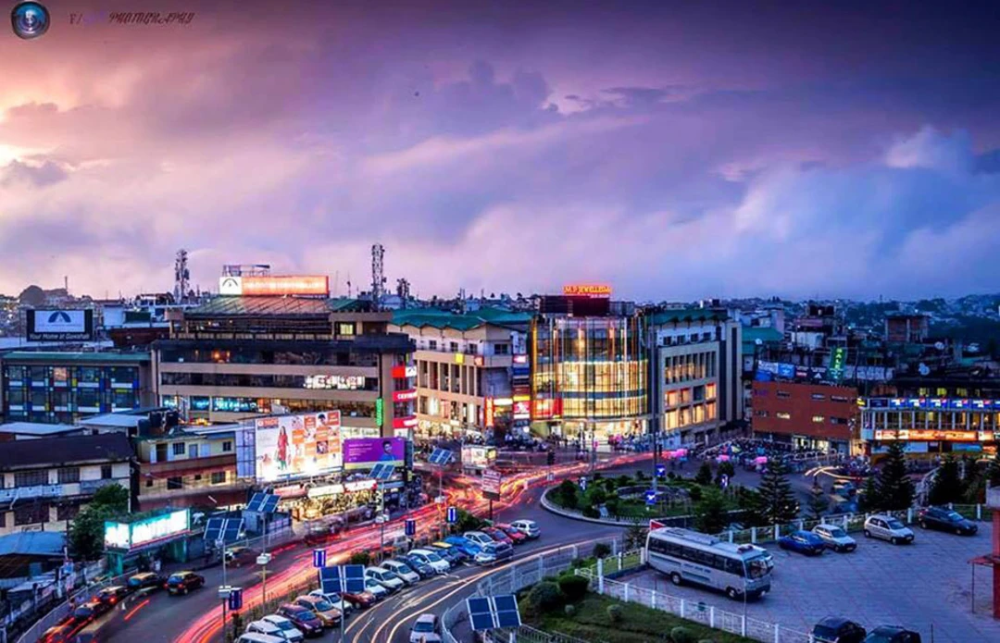
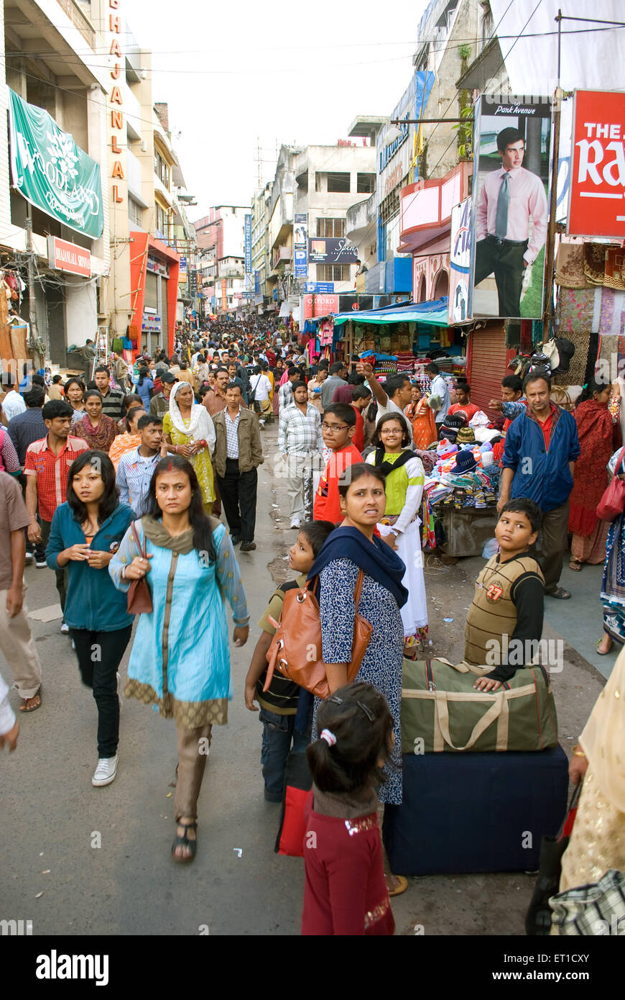
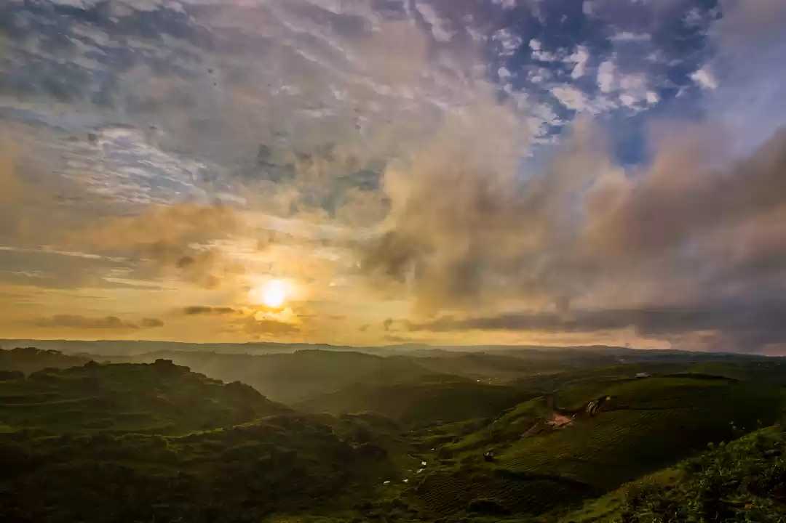

A Visual Journey Through Shillong
Explore the stunning landscapes, vibrant streets, and serene beauty of Shillong through our photo gallery. Each image captures a moment of the city's unique charm.





